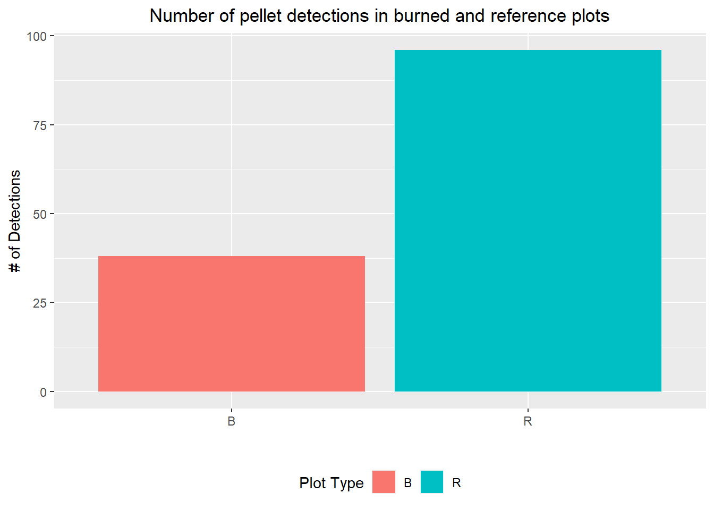
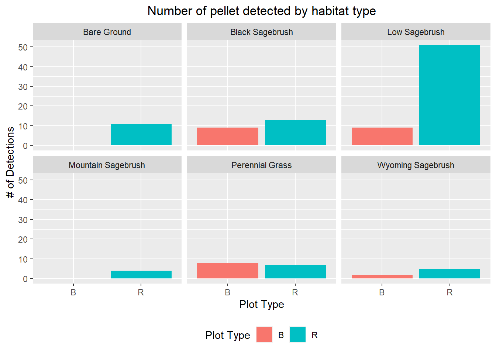
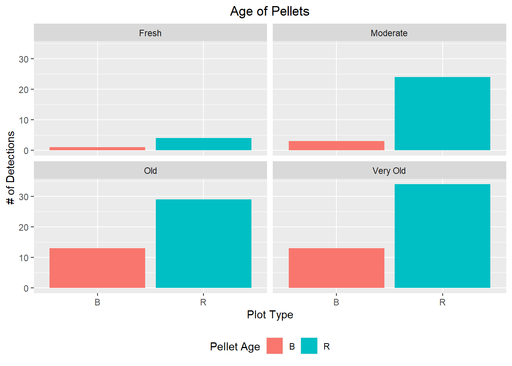
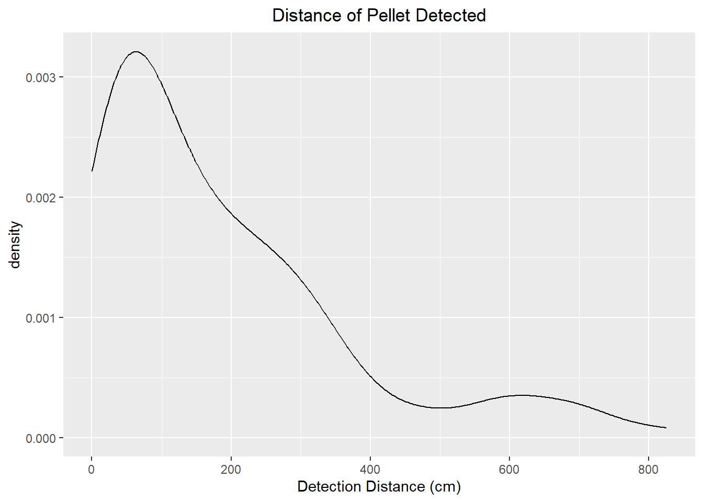

Chapter 3 Data Wrangling and Visualization of Pellet Transects
This chapter looks at wrangling and visualizing all of the pellet transect data.
3.1 Pellets detected by plot type
Let’s look at the number of pellets detected in burned and reference plots.
pellet_count <- dbGetQuery(sg_db, "SELECT * FROM pellet_count;")
pellet_count %>%
group_by(type) %>%
count() %>%
as_tibble() %>%
ggplot(aes(x = type)) +
geom_bar(aes(y=n, fill = type), stat = "identity") +
labs(x = "", y = "# of Detections", fill = "Plot Type")+
theme(legend.position = "bottom") +
theme(plot.title = element_text(hjust = 0.5)) +
ggtitle("Number of pellet detections in burned and reference plots") 
It looks like we detected more sage-grouse pellets in reference plots when compared to burned plots.
3.2 Pellets Detected by Habitat Type
Let’s look at what habitat type pellets were detected within burned and reference plots.
pellet_count <- dbGetQuery(sg_db, "SELECT * FROM pellet_count;")
pellet_count %>%
group_by(hab_type,type) %>%
count() %>%
filter(!all(hab_type == "")) %>%
as_tibble() %>%
ggplot(aes(x = type)) +
geom_bar(aes(y=n, fill = type), stat = "identity") +
facet_wrap(~hab_type)+
labs(x = "Plot Type", y = "# of Detections", fill = "Plot Type")+
theme(legend.position = "bottom") +
theme(plot.title = element_text(hjust = 0.5)) +
ggtitle("Number of pellet detected by habitat type")  It looks like most of the pellets were detected in low and black sage-brush. This could be because it’s easier to detect pellets within these habitat types, or because sage-grouse use these areas more.
3.3 Pellet Age
Let’s look at pellet age in burned and unburned plots
pellet_count <- dbGetQuery(sg_db, "SELECT * FROM pellet_count;")
pellet_count %>%
group_by(pellet_age,type) %>%
count() %>%
filter(!all(pellet_age == "")) %>%
as_tibble() %>%
ggplot(aes(x = type)) +
geom_bar(aes(y=n, fill = type), stat = "identity") +
facet_wrap(~pellet_age)+
labs(x = "Plot Type", y = "# of Detections", fill = "Pellet Age")+
theme(legend.position = "bottom") +
theme(plot.title = element_text(hjust = 0.5)) +
ggtitle("Age of Pellets")  It looks like the age of the pellets stays similar across burned and reference plots, with old and very old pellets being detected the most.
3.4 Pellet Distance
Let’s plot out pellet distance from transect line to look at approximately how far pellets are being detected.
pellet_count <- dbGetQuery(sg_db, "SELECT * FROM pellet_count;")
pellet_count %>%
filter(!all(pellet_dist == "")) %>%
filter(!is.na(pellet_dist)) %>%
mutate(pellet_dist = as.numeric(pellet_dist)) %>%
mutate(pellet_dist = pellet_dist*2.4) %>%
ggplot(aes(x = pellet_dist)) +
geom_density() +
theme(plot.title = element_text(hjust = 0.5)) +
ggtitle("Distance of Pellet Detected") +
labs(x = "Detection Distance (cm)")
Looks like most of our pellets are detected at distances less than 3 meters.